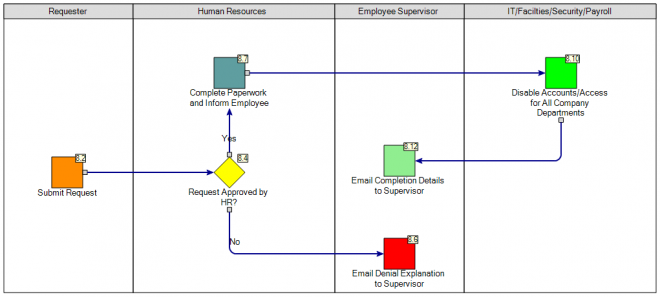
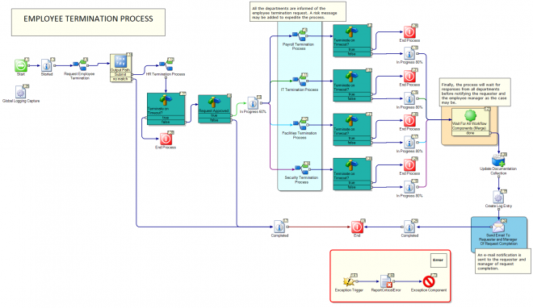
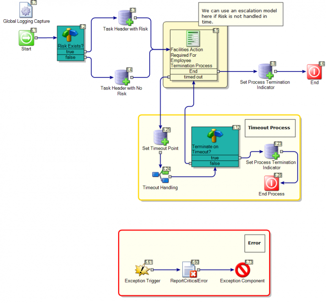
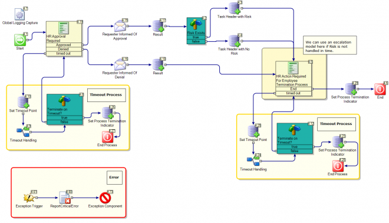
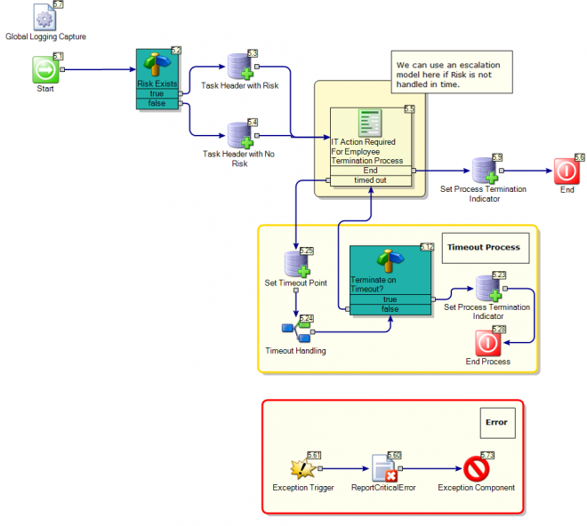
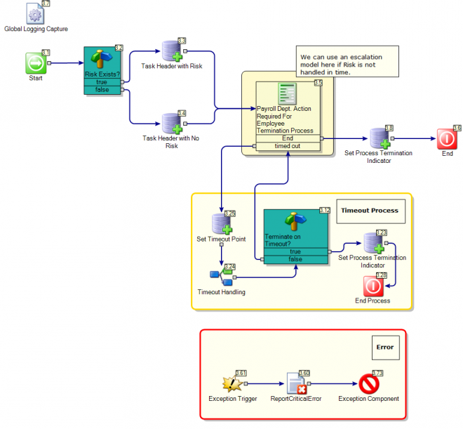
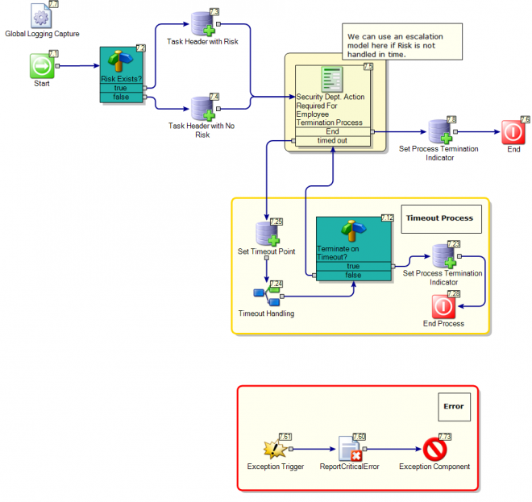
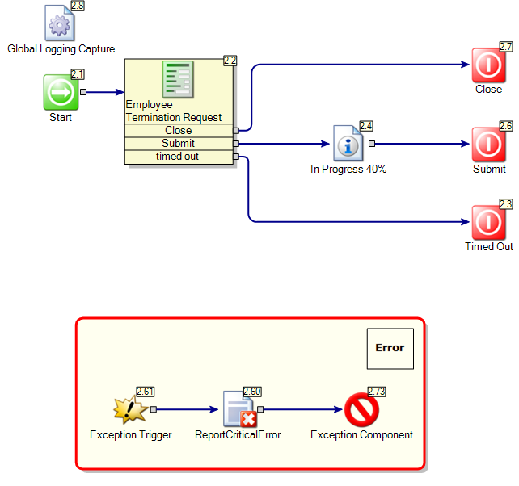
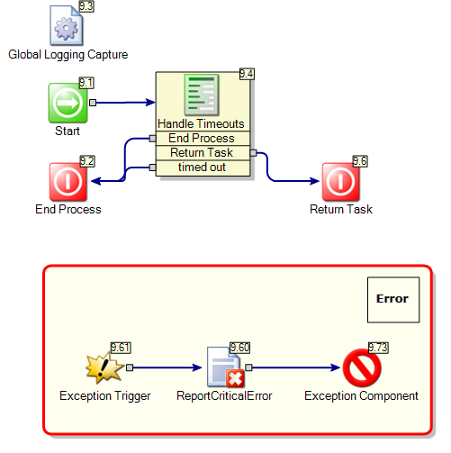

Terminate User

Description:
This process starts with a request form that the requester fills in to request an employee's termination. The process then moves forward to get manager's approval. After the manager's approval, the process informs IT, HR, Facilities and Security to complete the termination process.The manager can deny the request in which case the denial is sent to the requester with the reason of denial.
Author Mail:
support@symantec.com
Process Prefix: "ITSR-"
Documentation
| Employee Termination Process
Introduction
This document provides an overview of the Employee termination workflow project. Using a workflow to manage the process provides reliability in the authorization, processing, and communication between different departments within your organization.
The roles that are significant to this process are outlined in the process business model and include the following:
- Requester
- Human Resources
- Information Technology
- Payroll
- Security
- Facilities
This image represents a high-level overview of the process and can also found under the process Business Model when the project is open in Workflow Designer:
Prerequisites
Before making this workflow project live, understand and configure the following:
1. From the Properties tab in the project in the Workflow Designer, set the following details:
a. Global Email Information
i. SMTP Server – The server name or IP address of the outbound mail server
ii. EMail From Address – Email address that all system generated emails should be sent from
b. Administrative Contact
i. Administrator Contact Name – The person or group who should be made aware of any process issues
ii. Administrator Contact Info – The preferred method by which the administrator be contacted (used for instructing the user how to contact the system administrator in the event of a process error)
c. Task Email Addresses – These are the email addresses to which new hire tasks will be sent when appropriate
i. HR Email – Review requests and background findings
ii. IT Email – Set up new network accounts and workstations
iii. Facilities Email – Grant security access to company properties
iv. Security Email – Complete badging and security paperwork
v. Payroll Email – Setup employees in the company payroll system
vi. HR Manager – Handles escalated HR tasks when necessary
Process Structure
Reviewing the process in Workflow Designer you will find that it is composed of several models within the project tree. These roughly correspond to the various tasks that are required during the termination process. Each step is customizable to meet the needs of a particular company. | | --- |
 Symantec.Workflow.TerminateUser.package
Symantec.Workflow.TerminateUser.package
First we shall look at the Business Model.

Models
Primary

Linked Models to others.
Facilities Termination Process

Dialog Workflow(s)
- Facilities Action Required For Employee Termination Process
HR Termination Process

Dialog Workflow(s)
- HR Approval Required
- HR Action Required For Employee Termination Process
IT Termination Process

Dialog Workflow(s)
- IT Action Required For Employee Termination Process
- We can use an escalation model here if Risk is not handled in time.
Payroll Termination Process

Dialog Workflow(s)
- Payroll Dept. Action Required For Employee Termination Process
Security Termination Process

Dialog Workflow(s)
- Security Dept. Action Required For Employee Termination Process
Terminate User Request

Dialog Workflow(s)
- Employee Termination Request
Timeout Handling

Dialog Workflow(s)
- Handle Timeouts
Properties
| Name | Category | Value |
|---|---|---|
| HREmail | Task Emails | HR@demo.local |
| ITEmail | Task Emails | IT@demo.local |
| FacilitiesEmail | Task Emails | Facilities@demo.local |
| SecurityEmail | Task Emails | Security@demo.local |
| EmailFromAddress | Global Email Settings | no-reply@demo.local |
| SMTPServer | Global Email Settings | localhost |
| PayrollEmail | Task Emails | Payroll@demo.local |
| AdministratorContactName | Administrator | John Doe |
| AdministratorContactInfo | Administrator | Admin@demo.local |
| HRManager | Task Emails | HRManager@demo.local |
Global Data
N/A
Documented on Connect by: